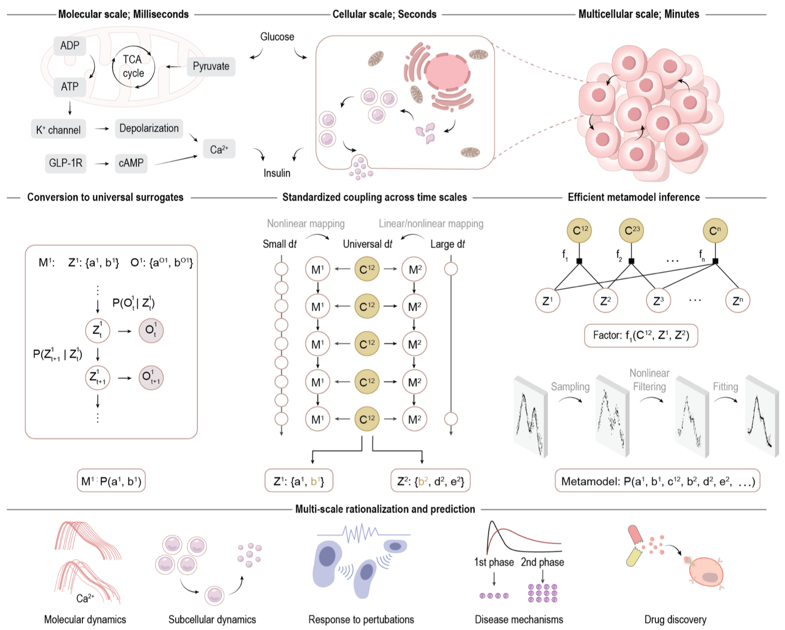
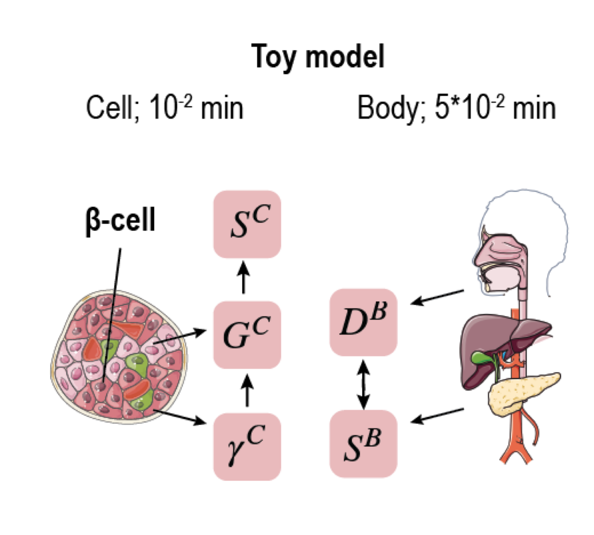
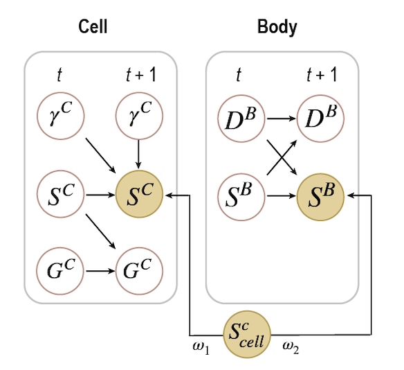
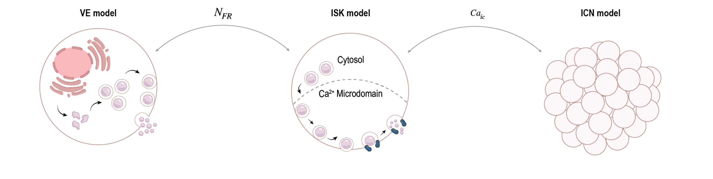
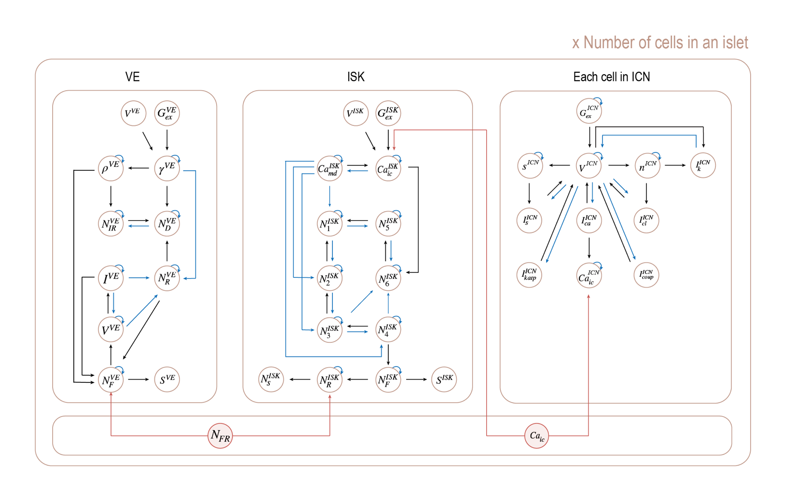
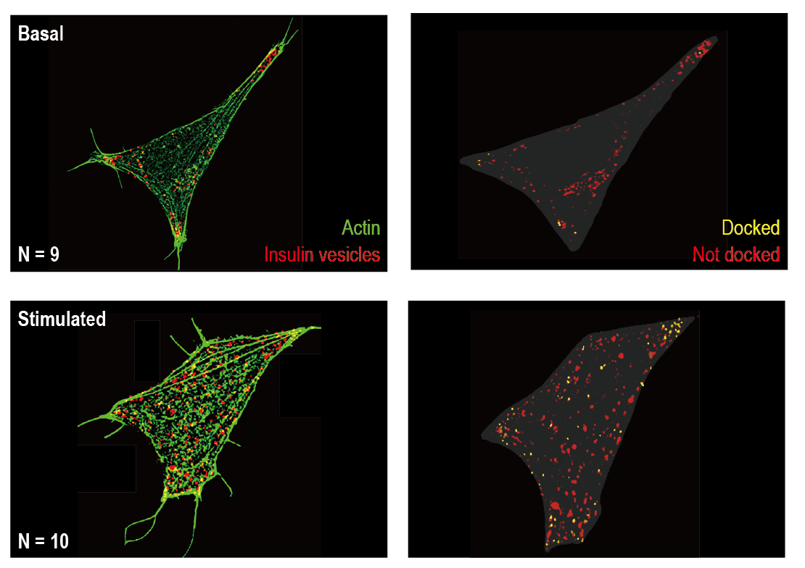

A Cell Metamodel Uncovers Mechanistic Drivers of Disease Phenotypes Across Molecular, Cellular, and Tissue Scales

We introduce Graph-based Metamodeling (GraphMM), a novel framework that integrates models across multiple representations and spatiotemporal scales, by (i) converting input models into universal surrogate representations using probabilistic graphical models; (ii) coupling surrogates across time scales using a standardized strategy; and (iii) approximate metamodel inference. Validation through synthetic benchmarks and real-world applications shows improved accuracy over existing methods. GraphMM enables quantitative predictions of β-cell dynamics and function across molecular, cellular, and multicellular scales. GraphMM provides a versatile framework for integrating models to uncover the dynamics of complex systems.
Benchmark - Toy GSIS metamodel
To validate the GraphMM framework, we constructed a synthetic toy model consisting of two subsystems: a cell system (time step 0.01 min) and a body system (time step 0.05 min). The cell system simulates insulin secretion dynamics, while the body system represents glucose absorption and distribution. These two systems operate at different temporal resolutions, making them an ideal testbed for multi‑scale coupling.
The ground truth (Truth) is known, allowing quantitative evaluation of the metamodel's accuracy. By converting each subsystem into a probabilistic surrogate model and introducing a coupling variable, GraphMM can statistically link the two scales and infer the joint dynamics.

GraphMM Coupling of the Toy Model
The coupling between the cell surrogate model and the body surrogate model is achieved by introducing a latent coupling variable Sccell. The connecting variables are the insulin secretion rates SC (cell) and SB (body). Their conditional distributions are defined as:
P(SBt+1 | Sccell,t, SBt) = N([ω₁·Sccell,t + (1‑ω₁)·fB(SBt,DBt)], φ1t )
P(SCt+1 | Sccell,t, SCt) = N([ω₂·Sccell,t + (1‑ω₂)·fC(SCt, γCt, GCt)], φ2t )
Here, fB and fC are the original subsystem dynamics, ω₁, ω₂ are weights determined by the overlap between the coupling variable distribution and each connecting variable distribution. The coupling variable itself is defined as a mixture of the two connecting variable distributions. By constructing a probabilistic graphical model (PGM) with edges from the coupling variable to both connecting variables, GraphMM enables joint inference using algorithms such as the Unscented Kalman Filter (UKF) or Particle Filter (PF). This approach significantly improves prediction accuracy compared to traditional common‑timestep integration (CTI).

Multiscale β-cell Metamodel (MuBCM)
The Multiscale β-cell Metamodel (MuBCM) integrates three existing mechanistic models that describe different aspects and scales of pancreatic β-cell physiology: the Vesicle Exocytosis (VE) model (molecular scale, milliseconds), the Insulin Secretion Kinetic (ISK) model (cellular scale, seconds), and the Islet Cell Network (ICN) model (multicellular scale, minutes). Each model is first converted into a probabilistic surrogate model with a unified time step (0.01 min). The VE and ISK models are coupled via a latent variable NFR (vesicle fusion and release), while the ISK and ICN models are coupled via the cytosolic Ca²⁺ concentration Caic. The resulting metamodel spans 10 orders of magnitude in time and captures glucose‑stimulated insulin secretion, calcium dynamics, and islet synchronization.

GraphMM Coupling of the Three β‑cell Models
The three surrogate models (VE, ISK, ICN) are coupled by introducing two latent coupling variables: NFR (linking VE and ISK) and Caic (linking ISK and ICN). The connecting variables are:
- For VE–ISK coupling: the number of fused vesicles NFVE and the number of releasing vesicles NRISK are connected via NFR.
- For ISK–ICN coupling: the cytosolic Ca²⁺ concentrations CaicISK and CaicICN are connected via Caic.

The full probabilistic graphical model (PGM) includes directed edges from each coupling variable to its respective connecting variables. Inference is performed using Unscented Kalman Filters (UKF) or Particle Filters (PF), enabling the metamodel to predict β-cell dynamics across scales with high accuracy. The resulting MuBCM outperforms both the individual input models and traditional common‑timestep integration (CTI) methods.
Validated against experimental data
Structured Illumination Microscopy (SIM) of INS‑1E β‑cells reveals an increased fraction of morphologically docked insulin vesicles upon glucose stimulation (yellow puncta). The metamodel accurately predicts the increase in the immediately releasable pool (IRP), docked pool, and fused pool, demonstrating its ability to capture glucose‑stimulated vesicle trafficking and exocytosis.
